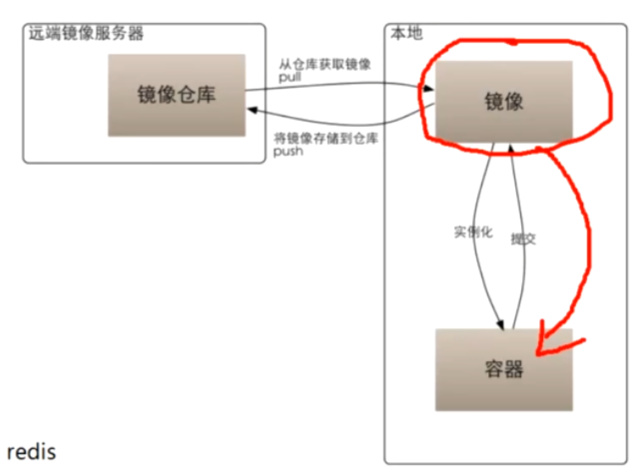
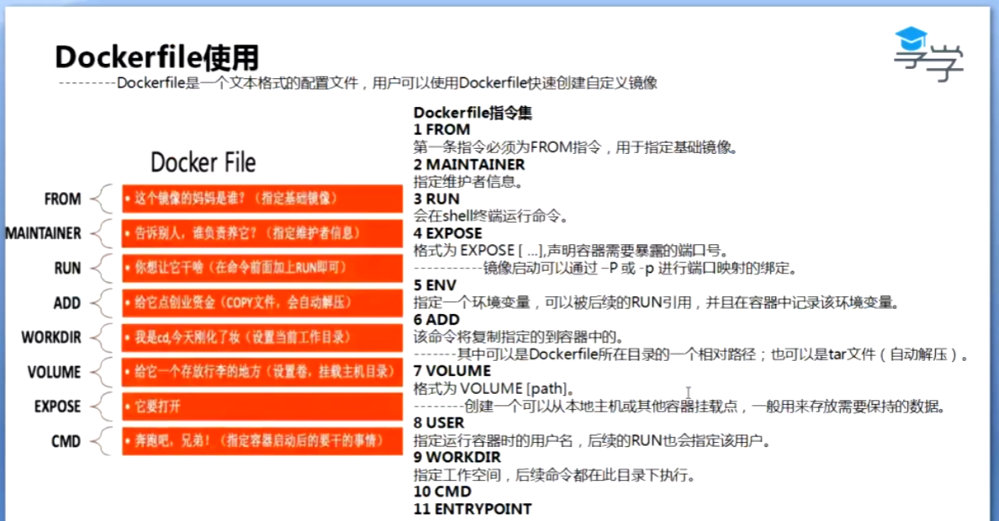

Docker
思想：
Linux 为系统内核 加 文件系统
Docker 复用了Linux的系统内核，加定制的文件系统，组成了虚拟化容器
Docker 容器使用的是最小定制 例如有ls 但是没有ll
概念：
镜像是楼层的概念：
- cmd命令
- nginx文件
- 常用命令
- linux文件
这样导致很多镜像的楼层下载的时候可以复用
组件：
- Images：
Docker的镜像 用来生成Docker容器的模版 - Container:
Docker的实际运行的容器 - Client：
客户端，通过docker api与docker守护进程进行通讯 - Host：
主机，用来运行docker的守护进程和doucker容器 - Registry：
仓库用来保存镜像 - Machine：
虚拟化指令（命令行工具），简化docker的安装
架构：

- LowerDir: 镜像的文件目录 只读的
- MergedDir：层叠文件目录
- UpperDir：容器文件目录
docker 安装:
- yum仓库配置路径: /etc/yum.repos.d/
- wget https://mirrors.aliyun.com/docker-ce/linux/centos/docker-ce.repo
- yum clean all && yum makecache fast
- yum install docker-ce-18.09.9 docker-ce-cli-18.09.9 containerd.io -y
docker 命令：
- systemctl start docker 启动docker
- systemctl enable docker 开机自动启动docker
- systemctl deamon-reload 重新加载systemctl所管理的服务的配置文件
- systemctl restart docker 重启docker
- docker pull 从仓库拉去镜像
- docker run 启动一个容器
- d 后台运行
- name 容器名称
- 再加 镜像名称：版本
- v 宿主机目录：要替代的容器内部文件目录
挂载规则：- 容器的配置文件，放在宿主机进行挂载
- 生产的业务数据，放在宿主机挂载，防止误删除容器
- 进行生产的日志文件，放在宿主机进行挂载
- nginx 独有配置
- p 宿主机暴露端口：容器端口
- mysql 独有配置
- p 宿主机暴露端口：容器端口
- e MYSQL_ROOT_PASSWORD=123456 root用户密码
- 要是加上自己的命令，则会把默认命令覆盖掉， 如echo 111
- docker images 查看已有的镜像
- docker ps 查看容器状态(alive)
- a all 所有的
- docker info 查看docker信息
- docker version 查看docker版本
- docker inspect +容器名称或者id 查看容器信息
- docker rm -fv +容器名称或者id 删除容器
- f 强制删除
- v 附带的数据也删除
- docker rmi 删除镜像
- docker exec -it 容器的名称或者id /bin/bash 进入容器 ctrl+shift+p+q 退出交互但容器不关闭
- i 即使没有附加, 也保持stdin打开
- t 分配一个伪终端
- d 分离模式, 在后台运行
- exit 退出
- docker cp 源容器name或id：路径 目标路径 复制文件
- docker logs 容器name或者id 查看容器日志
- docker search 镜像名 查找镜像
- docker commit 将容器转换为镜像
- a author 作者
- m 备注
- 加上容器名称
- 加上镜像名称：版本
- docker build 创建镜像
- t 镜像名称：版本号
- 加.表示当前目录下的DockerFile
- docker history 查看容器楼层
- docker tag 镜像:版本 ip:port/镜像:版本 创建分支用于push到仓库
- docker push ip:port/镜像:版本 把镜像推送到仓库
DockerFile: 构建自定义镜像

Docker 仓库
需要启动一个registry服务 来管理镜像默认端口5000